Sort the Files
Sorting files in Windows is a straightforward process that can help you organize your files by various criteria such as name, date modified, type, size, and more. Here’s how you can do it:
Method 1: Using the Right-Click Menu
1. Open the folder where you want to change the order of the files.
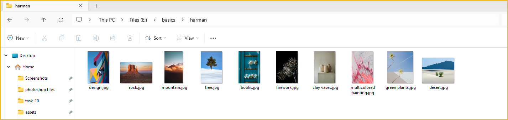
2. Right-click on an empty space in the folder and select Sort by.
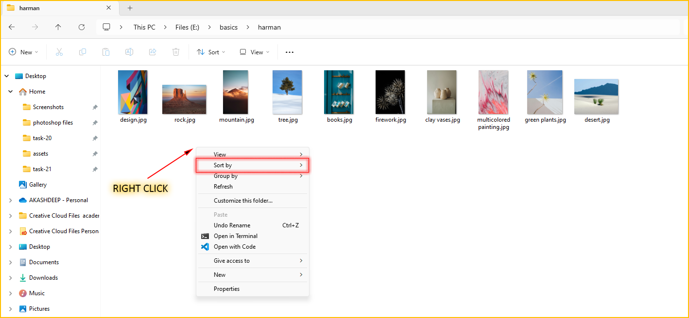
3. Different sort options will be displayed after you click Sort by.
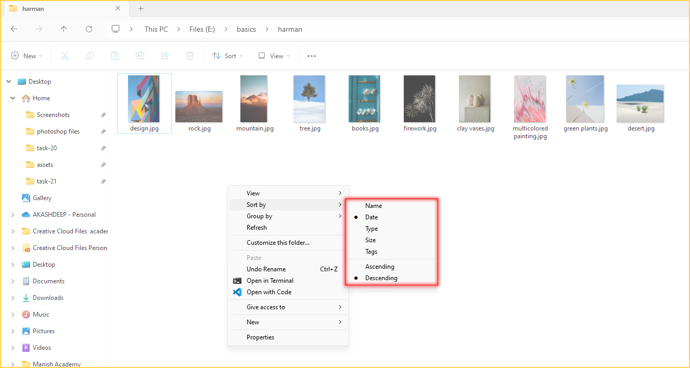
4. Let's Try them One by One. 
(i). From the sort by options, first select - Name.
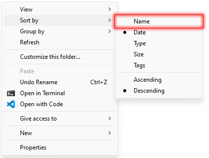
- The following is the order of the files that you will get after selecting Name.
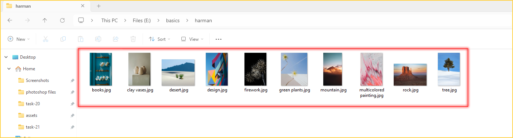
This option sorts files alphabetically by their names in ascending order.
(i). From the sort by options, again select - Name option.
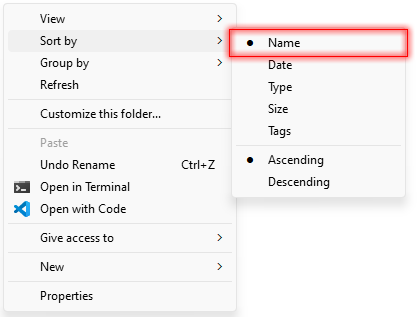
Now, the files will be sorted by their names in descending order.
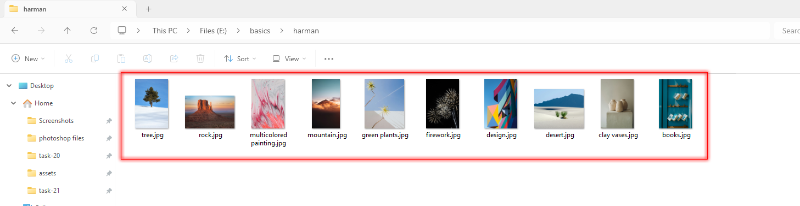
(ii). Now we will sort the following files by date modified.
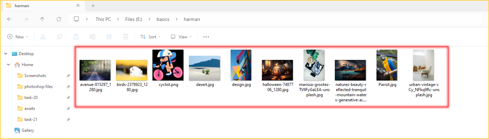
From the sort by options, select - Date . This option sorts files by the date and time they were last modified
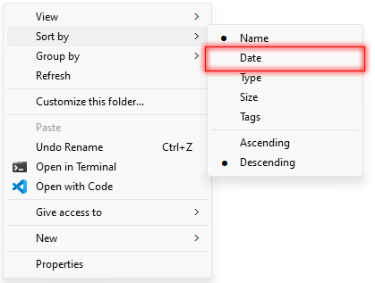
- The following is the view of the files that you will get after sorting by date modified.
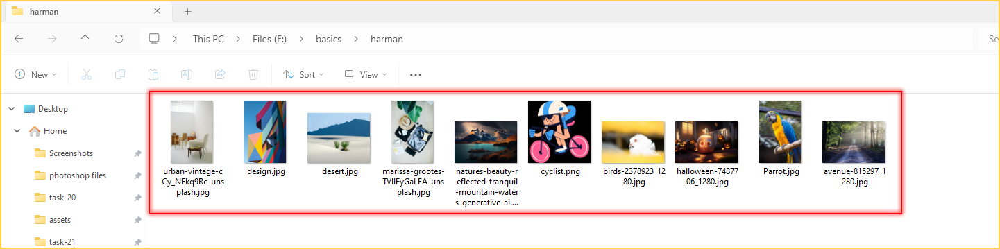
- To understand it better, Let's change the view of the files to Details.
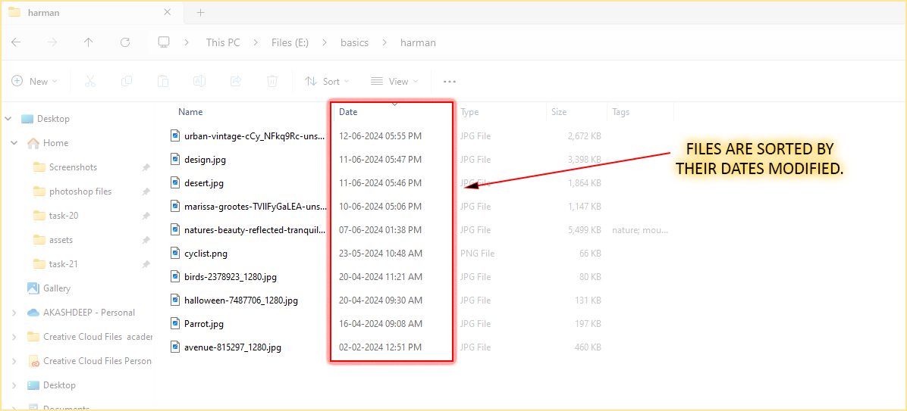
As you can clearly see the files are sorted by the dates.. Now, if you again select the date from the sort by options, the files sort order will change from ascending to descending or vice-versa.
(iii). Now we will sort the following files by type.
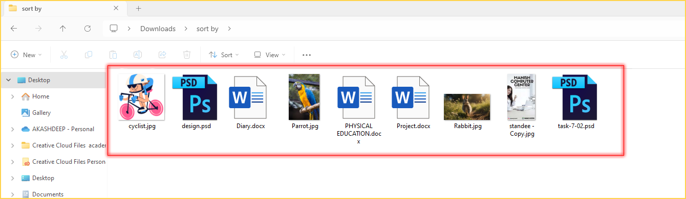
From the sort by options, select - type . This option sorts files by their file type (extension).
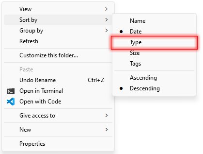
- The following is the view of the files that you will get after sorting by type.
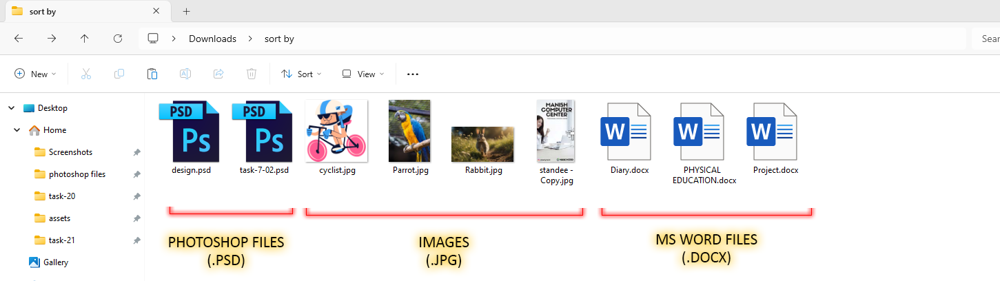
This option is useful for grouping similar types of files together, such as all Word documents (.docx), PDFs (.pdf), and images (.jpg).
(iv). Now we will sort the following files by size.
From the sort by options, select - size . This option sorts files by their size, from smallest to largest or vice versa.
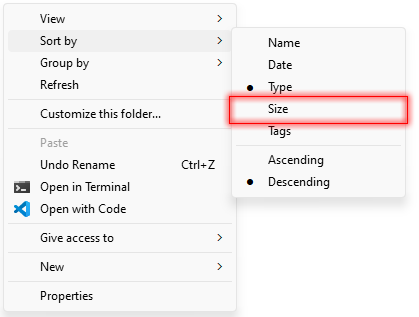
- The following is the view of the files that you will get after sorting by size - in this case, largest to smallest.
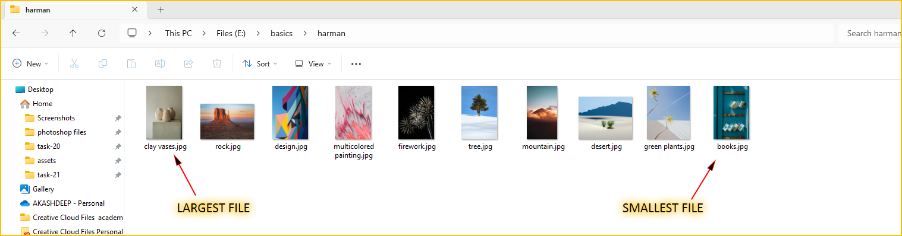
(iv). From the sort by options, again select - size.
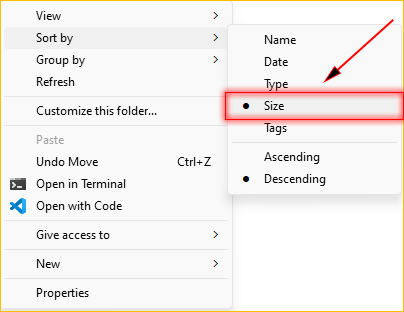
Now, the files will be sorted by their size in ascending order(smallest to largest).
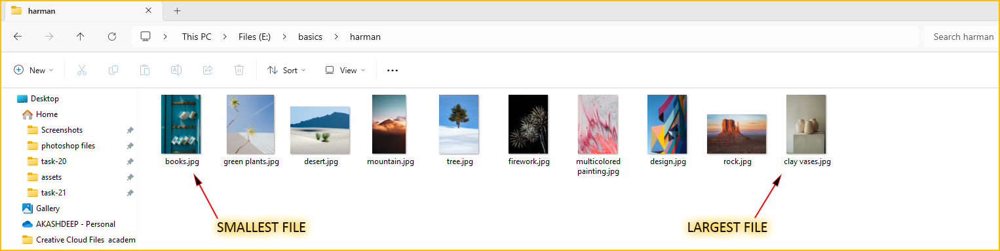
- To understand it better, Let's change the view of the files to Details.
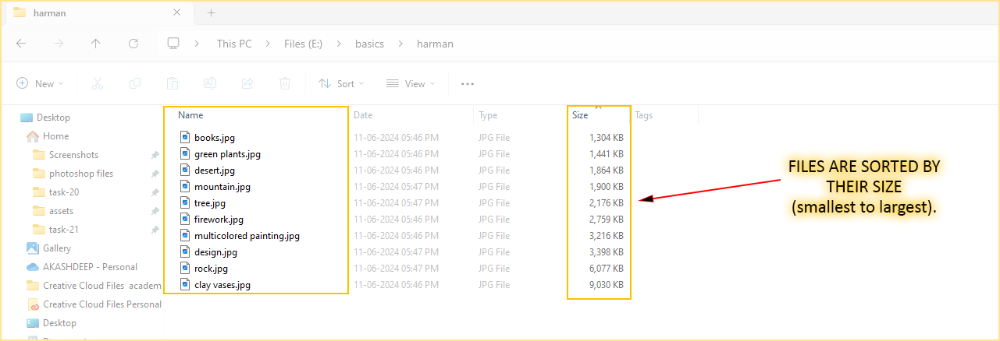
This option is useful for identifying large files that may be taking up a lot of space or for finding smaller files.